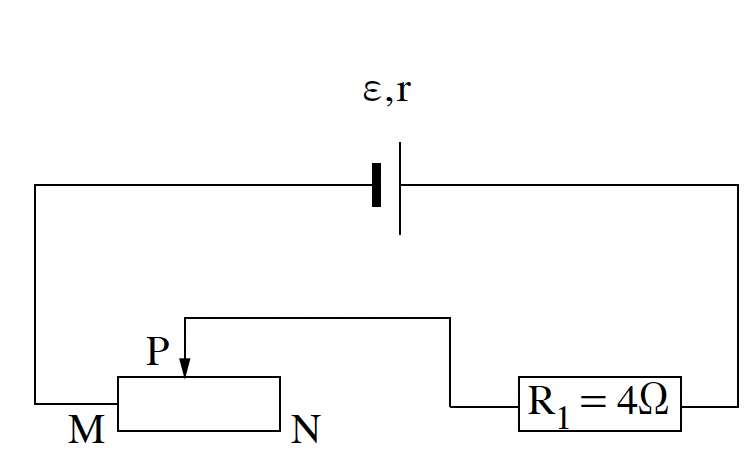
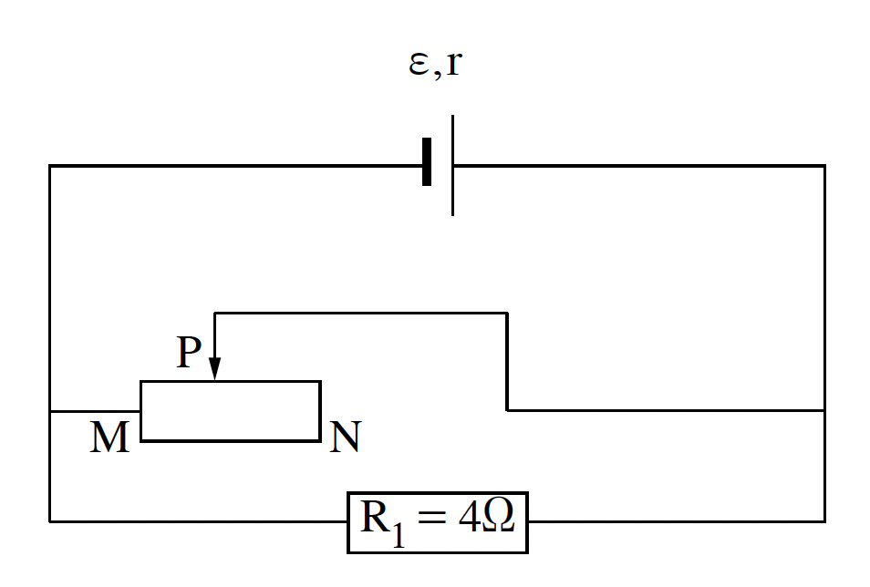

שאלה 2
בתרשים 1 מתואר מעגל חשמלי המורכב מסוללה שהכא"מ שלה ε והתנגדותה הפנימית r, נגד שהתנגדותו קבועה R1 = 4Ω, נגד משתנה MN שנקודת המגע הנייד (הגררה) שלו היא P ותילים אידיאליים.
נתון כי ההתנגדות של הנגד המשתנה ליחידת אורך היא λ = 0.8 Ω/cm ואורכו הכולל ℓ = 30 cm.

לפניכם חמישה היגדים 1-5. העתיקו למחברת הבחינה רק את ההיגדים הנכונים. (6 נקודות)
הערך של מתח ההדקים תלוי בהתנגדות הפנימית של הסוללה.
הערך של מתח ההדקים קָטֵן כאשר ההתנגדות החיצונית של המעגל גְּדֵלָה.
ככל שעוצמת הזרם במעגל גְּדֵלָה - מתח ההדקים גָּדֵל.
ערך הכא"מ אינו תלוי בזרם.
J/C היא יחידה המבטאת כא"מ.
נתון:
כאשר עוצמת הזרם במעגל היא I = 1.5A, מתח ההדקים הוא V = 18V.
כאשר עוצמת הזרם במעגל היא I = 2.5A, מתח ההדקים הוא V = 16V.
חשבו את כא"מ הסוללה, ε, ואת ההתנגדות הפנימית, r. (8 נקודות)
חשבו את המרחק של המגע הנייד P מן הקצה N של הנגד המשתנה, כאשר הזרם במעגל הוא I = 1.5A. (7 נקודות)
פירקו את המעגל המתואר בתרשים 1 והרכיבו מאותם הרכיבים מעגל אחר, המתואר בתרשים 2. המגע הנייד P נמצא במיקום שחישבתם בסעיף ג.

ענו על סעיפים ד-ה בנוגע למעגל המתואר בתרשים 2.
האם מתח ההדקים שווה ל-18V, גדול ממנו או קטן ממנו? נמקו את קביעתכם. (7 נקודות)
האם אפשר למדוד במעגל הזה מתח הדקים שערכו V = ε? אם כן - הסבירו כיצד, אם לא - נמקו את קביעתכם.
האם אפשר למדוד במעגל הזה מתח הדקים שערכו V = 0? אם כן - הסבירו כיצד, אם לא - נמקו את קביעתכם.
(5.33 נקודות)